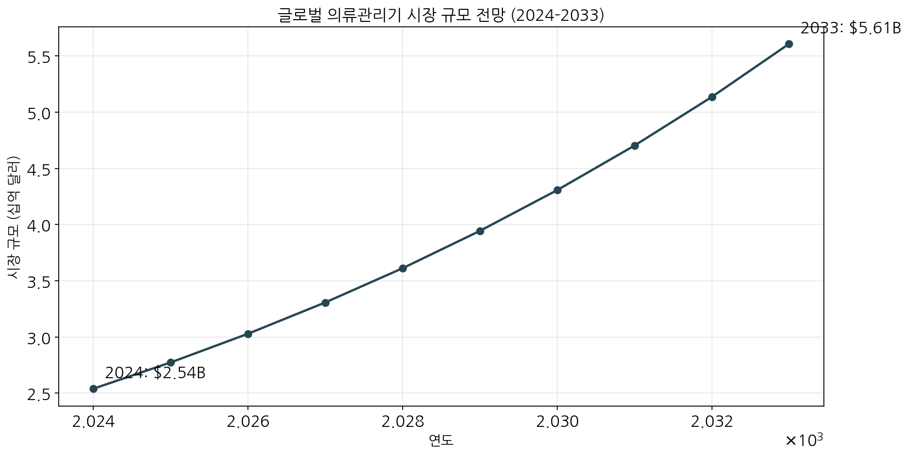
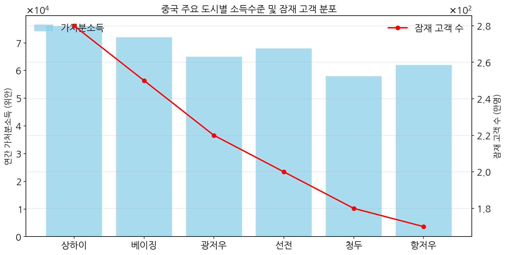
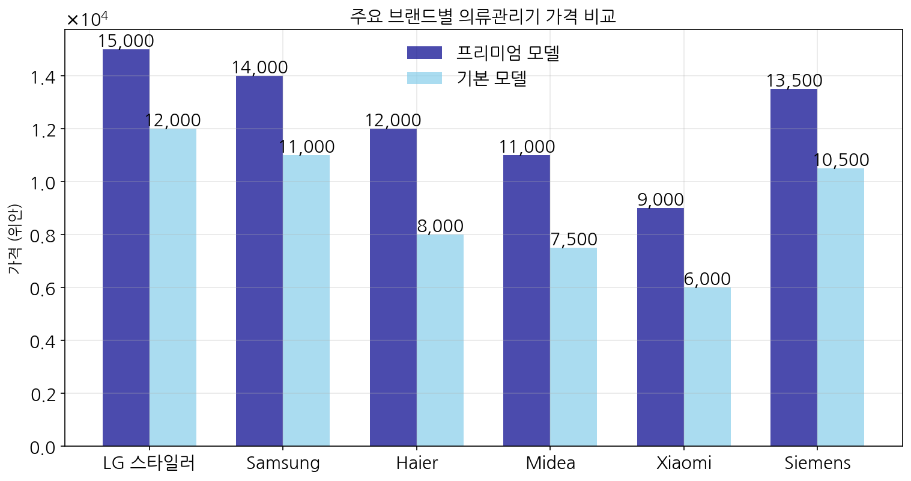

본 보고서는 LG 스타일러의 중국 시장 진출을 위한 판매 전략을 종합적으로 분석하여 제시합니다. 분석 결과, 글로벌 의류관리기 시장은 높은 성장세(CAGR 9.2%)를 보이며, 중국 내 주요 도시별 시장 잠재력 분석 결과 상하이, 베이징을 중심으로 한 단계적 시장 진입이 효과적일 것으로 예상됩니다. 가격 전략은 현재의 프리미엄 포지셔닝을 유지하되, 프로모션을 통한 실질 구매 장벽 완화가 필요합니다.
1. 시장 성장 분석
글로벌 의류관리기 시장은 지속적인 성장세를 보이고 있으며, 특히 중국 시장에서의 성장 잠재력이 큽니다.
주요 시장 지표
2024년 시장 규모: $2.54B
2033년 예상 시장 규모: $5.61B
연평균 성장률(CAGR): 9.2%
10년간 총 성장률: 120.8%

그림 1: 글로벌 의류관리기 시장 성장 전망 (2024-2033)
위 그래프에서 볼 수 있듯이, 의류관리기 시장은 향후 10년간 꾸준한 성장세를 유지할 것으로 예상됩니다. 이는 소비자들의 건강과 위생에 대한 관심 증가, 프리미엄 생활가전에 대한 수요 증가, 스마트홈 트렌드 등에 기인한 것으로 분석됩니다.
2. 중국 도시별 시장 잠재력 분석
중국의 주요 도시별 소득수준과 잠재 고객 분포를 분석한 결과, 도시별로 차별화된 접근이 필요합니다.
주요 도시 분석 결과
소득수준 상위 도시:
상하이: 76,000위안
베이징: 72,000위안
선전: 68,000위안
잠재 고객 규모 상위 도시:
상하이: 280만명
베이징: 250만명
광저우: 220만명

그림 2: 중국 주요 도시별 소득수준 및 잠재 고객 분포 분석
시장 진입 우선순위 제안
1순위: 상하이 - 높은 소득수준과 최대 잠재고객 보유
2순위: 베이징 - 안정적인 소득수준과 큰 시장규모
3순위: 선전/광저우 - 성장성 높은 남부시장
3. 경쟁사 가격 분석
중국 시장에서 LG 스타일러와 경쟁하는 주요 브랜드들의 가격 포지셔닝을 분석한 결과입니다.
주요 가격 지표
LG 스타일러 가격 포지셔닝:
프리미엄 모델: 15,000위안
기본 모델: 12,000위안
시장 평균 가격:
프리미엄 모델 평균: 12,417위안
기본 모델 평균: 9,167위안
가격 차이 분석:
LG 프리미엄 모델과 시장 평균의 차이: 2,583위안
주요 경쟁사 대비 프리미엄 가격대 형성

그림 3: 주요 브랜드별 의류관리기 가격 비교 분석
가격 전략 제안
프리미엄 이미지 유지를 위한 현재 가격대 유지
프로모션을 통한 실질 구매가격 조정 검토
중국 현지 생산 모델 도입 시 가격 경쟁력 확보 가능
초기 진입 시 한정판 모델 출시를 통한 브랜드 인지도 확보
4. 종합 판매 전략
4.1 단계별 시장 진입 전략
단계
타겟 지역
주요 전략
목표 기간
1단계
상하이, 베이징
플래그십 스토어 오픈, 프리미엄 백화점 입점
1년차
2단계
선전, 광저우
주요 온라인 플랫폼 입점 확대, 중형 매장 확충
2년차
3단계
청두, 항저우 등
현지화 제품 도입, 유통망 확대
3년차
4.2 목표 고객층 정의
주요 타겟 고객층은 다음과 같습니다:
고소득 도시 거주자 (연간 가처분소득 7만 위안 이상)
프리미엄 의류 소유자
스마트홈 얼리어답터
건강과 위생에 관심이 높은 소비자
프리미엄 패션 브랜드를 선호하는 25-45세 소비자
4.3 마케팅 및 브랜딩 전략
중국 소비자의 특성과 선호도를 고려한 차별화된 마케팅 전략이 필요합니다.
주요 마케팅 전략:
프리미엄 기술력 강조 - TrueSteam™ 기술의 차별점 부각
스마트 연결성 강조 - 중국 스마트홈 생태계와의 연동 기능 홍보
KOL 마케팅 - 패션/라이프스타일 인플루언서 협업
O2O 전략 - 온라인 탐색부터 오프라인 경험까지 연결된 구매 여정 구축
맞춤형 콘텐츠 - 중국 소비자의 라이프스타일에 맞는 사용 시나리오 개발
4.4 유통 채널 전략
중국 시장의 특성을 고려한 다채널 유통 전략이 필요합니다.
주요 유통 채널:
프리미엄 백화점 - SKP, 갤러리아, 신세계 등
LG 브랜드숍 - 주요 도시 핵심 상권에 플래그십 스토어 운영
전자상거래 플랫폼 - Tmall, JD.com 등 주요 플랫폼 입점
소셜 커머스 - Xiaohongshu 등 소셜 커머스 활용
4.5 현지화 전략
중국 소비자의 니즈에 맞춘 제품 및 서비스 현지화가 필요합니다:
중국 소비자 선호 기능 추가 - 스마트폰 앱 중국어 지원, 중국 가전 생태계 연동
패키지 현지화 - 중국 선물 문화를 고려한 패키지 디자인
중국 특화 모델 - 장기적으로 중국 시장에 특화된 모델 개발 검토
현지 AS 네트워크 - 빠르고 효율적인 고객 서비스 체계 구축
5. 결론 및 권고사항
LG 스타일러는 중국의 성장하는 프리미엄 가전 시장에서 큰 잠재력을 가지고 있습니다. 분석 결과를 종합해 볼 때, 다음과 같은 접근이 권장됩니다:
단계적 시장 접근: 상하이와 베이징을 중심으로 초기 진입 후 점진적 확대
프리미엄 포지셔닝 유지: 가격 경쟁보다는 브랜드 가치와 기술력 차별화 중시
타겟 고객 집중: 고소득 도시 거주자 및 프리미엄 의류 소유자에 집중
옴니채널 전략: 온·오프라인을 아우르는 통합적 고객 경험 제공
현지화 추진: 중국 소비자의 특성과 선호도를 고려한 제품 및 서비스 현지화
이러한 전략적 접근을 통해 LG 스타일러는 중국 프리미엄 의류관리기 시장에서 성공적인 포지셔닝을 구축하고 지속 가능한 성장을 달성할 수 있을 것으로 기대됩니다.